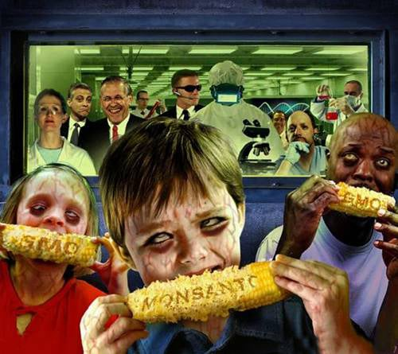
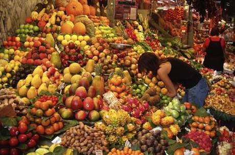

Preporuka za ovaj jedinstveni uređaj za zaštitu od tehničkih i drugih zračenja.
(Uređaj preporučuje i Spasoje Vlajić)

Da bi ste saznali šta je to zdrava hrana moramo prvo videti šta je to nezdrava hrana.Mnogo se priča u poslednje vreme o gmo ili genetski modifikovanim organizmima.Ono što je mene najviše zapanjilo je da ima puno ljudi koji grčevito brane gmo hranu kao nešto jako dobro i zdravo jer je jako otporna,dugo može da stoji,i čak kažu da je zdravija od klasične.Naravno oni su završili određene nauke koje sada moraju da brane.To i jeste cilj velikog brata.Učio si njegovu školu,platio za to i sada moraš da braniš sve to.Prvo gmo ja uopšte ne bih zvao hranom nego otpadom koji ne jedu ni miševi ni bube(zato i može da stoji toliko).Gmo hrana ima izmenjenu genetsku strukturu od strane ludih naučnika školovanih kod globalista,koji su im zadali za zadatak da tako nešto naprave i ne bi se čudio da neko od njih dobije i nobelovu nagradu za to.E onda će tek mnogi reći pa da eto bili smo u pravu,to je spas za čovečanstvo,revolucija.Inače oni gmo proturaju raznim zemljama pod parolom rešavanja problema gladi u svetu koju su prethodno ti isti napravili.Morate shvatiti osnovnu stvar za početak,što je čovek više dirao i modifikovao nešto što je od Boga dato ili od nekih mnogo naprednijih,nije dobro menjati i glumiti boga.Tako da kada napravite gmo hranu,i izmenite prvobitna svojstva hrane ona gubi ono što je najvažnije životnu silu,energiju-ono što daje život.Jednostavno dobijate otpad.Ta hrana može na oko lepo da izgleda jer đavo zna da ljudi vole ako lepo izgleda i da će to pre kupiti,samo ne znam da li znate u nekim zemljama crvljive namirnice imaju duplo veću cenu od one našminkane,što je još i dodatno glancaju po pijaci.Samo ti farmeri nisu ludi,oni za sebe gaje klasičnu hranu a za prodaju gmo zbog ekstra zarade.Vidite i sami šta sve novac radi,a da i ne govorim sada o tome kako se dobijaju razni sertifikati za tu gmo hranu da je to bezbedno,sve se to plaća dobro i to naštampanim parama.Znači kada vam oduzmu životnu energiju i esenciju života vi polako umirete.Čovek je u osnovi strašno otporan i moćan ali se konstanto ubija na sve moguće načine.Pa sad sve zavisi ko koliko može da izdrži.Uz sve to ta gmo hrana se tretira tzv. Totalnim herbicidima koji su izuzetno opasni.Ne bih nabrajao šta sve sadrže ali spisak je podugačak.Rađeni su mnogobrojni eksperimenti od slobodnih naučnika širom sveta i bez dileme je utvrđena štetnost gmo,život je bio najmanje duplo kraći sa gomilom bolesti i umiranjem u najtežim mukama.Ukoliko ne bolujete od Alergije, a posle neke hrane vam se javi, znajte da ste verovatno pojeli gmo.To je obično prvi simptom a ostalo ide kasnije.

Oni koji zagovaraju gmo moram da im kažem da se polako pripremaju za plastičnu i sintetičku hranu koja je već u pripremi,i po njima će sigurno biti još zdravija jer će biti otporna i na padove i udarce,a i neće morati da se gaji na poljima nego lepo u laboratoriji.”Nauka je zakon”.Što se tiče samih gmo namirnica u početku je najviše bila modifikovana soja a verovatno i danas,procenat gmo soje u svetu je preko 90% a i kod nas iako je ovde zvanično zabranjena gmo.Soja je posebno problem jer se dodaje kao dodatak u jako veliki broj namirnica i prvo se krenulo sa tim,pa onda kukuruz i tako dalje da bi danas lista gmo hrane bila jako dugačka za nabrajanje.Mnoga hrana se još i dodatno zrači da bi mogla duže da stoji.Meso je u današnje vreme postalo posebno opasno i preporučio bi svima da ga se što pre reše.Neću sada ulaziti u istorijat mesa i cele te priče o hrani jer je jako dugačko ali rećiću vam samo da ne samo da se životinje hrane najgorim otpadom,gmo hranom,antibioticima,nego u sebi sadrže i hormon smrti koji deluje na one koji to jedu.Što se tiče metafizičkog aspekta kada jedete meso vi ste naručilac ubistva i imaćete veće posledice zbog toga nego onaj ko je poslovno ubio životinju,a još plus ste i nesvesni oko toga.U raju neće biti mesa to je sigurno.Postepeno ga smanjujte i izbacujte.U poslednje vreme sve više se priča i o veštačkom mesu koja se preporučuju kao hrana što će još dodatno ugroziti zdravlje ljudi.Inače u novom svetskom poretku jako forsiraju i emisije tipa lov i ribolov kao sport.Ubijanje to prikazuju kao nešto jako pozitivno i u zdravom duhu je otprilike eto potreba za ubijanjem.Čitajte o ovome detaljnije u rubrici sport.Uskoro pripremaju i insekte da ljudima nametnu umesto mesa da bi se prešlo na jedan još niži nivo ishrane i od samog mesa,što bi i dodatno skratilo život ljudima.Inače u Americi su sve popularniji i restorani sa ljudskom hranom da bi se razvio kanibalizam kod ljudi i ludostima nema kraja.
Kada kupujete hranu gledajte i koje aditive sadrže i odakle je hrana.Postoji spisak zemalja gde je već sve zatrovano.Inače posebno treba imati u vidu da se koriste sve opasniji pesticidi koji za posledicu imaju neverovatan broj bolesti koje su u porastu.
Kada ste shvatili šta je gmo ili otpad hrana sada da vidimo šta je zdrava hrana,mada je ovo čitava nauka sa kojom se malo ko bavi za sada u pravom smislu te reči.Često se spominje organska hrana kao zdrava hrana kao i prodavnice zdrave hrane kao rešenje.Prvo preko 80% hrane tamo uopšte nije zdrava hrana,a i ono ostalo morate znati kako se koristi da ne biste napravili još veći problem.Jedno je sigurno organska hrana jeste zdravija,ali koliko zapravo od klasične koja nije gmo to je pravo pitanje.Nekada pre 50ak godina nisu postojali takvi otrovi ili se nisu koristili ni približno kao danas za prskanje biljaka,tako da ispada da je današnja organska hrana u početku bila zdrava skoro kao i ona pre 50 ili 100 godina,kada su velikom bratu bili potrebni ipak zdraviji robovi za rad iz mnogo razloga a i medicina nije bila toliko "razvijena" pa nisu mogle da se uzmu pare za "lečenje".Međutim znate da se i organska tretira veštačkim hemikalijama i đubrivima sve više,samo ne prskanjem od gore nego od dole,tako da ispada da nije šija nego vrat.Ispada da vam je organska hrana nešto kao hrana od pre 30-40 godina.To vam je taj kvalitet,ali je zato cena 3-5 puta skuplja a nekada i 10 puta.Ali u poslednje vreme sve više novac vrti i gde burgija neće,pa se proturaju sve opasnije hemikalije koje uopšte nisu bezopasne.Vremenom ako se tako nastavi nema ništa ni od te zdrave hrane.Onda postoji sledeća kategorija hrane koja se proizvodi na potpuno drugi način od klasične pripreme,počevši od pripreme zemlje pa redom.Postoji jedan mali broj privatnika koji se usudio da ovo proizvodi i ova hrana je oko 10 evra kila,recimo brašna.Ja sam se začudio kada sam video da to uopšte ima da se kupi,ali za ovo već morate biti dobro potkovani sa znanjem da biste znali šta tražite,samo ne znam ko ima para za to.Znači veliki brat vam daje šansu ali samo ako ste toliko bogati(znači iz njihovih krugova) i neko vam šapnuo šta treba da kupujete.To je već zdrava hrana.Iznad ove kategorije hrane postoji još jedna koja će predstavljati budućnost zdrave hrane i da bi ste se time bavili i razumeli o čemu se radi morate da znate jako mnogo o svemu sa ovoga sajta,uključujući i zakone kosmosa,a morali bi ste imati i sopstvenu zemlju dok ne padne sistem demonskog novog svetskog poretka.Gledao sam neke dokumentarce koji se teško nabavljaju i video da se ovakvi eksperimenti rade bar delimično i rezultati su fantastični,savršena hrana može da se napravi i specifična za određenu osobu,naravno bez upotrebe bilo čega veštačkog i napunjena energijom.Uglavnom koga bude interesovalo saznaće,imam o svemu tome…
Preporučujem da odgledate ovaj dokumentarac kao neku osnovu štetnosti klasične hrane kao i uticaje zdrave hrane

Ovde možete napraviti manju ili veću kupovinu onoga što je na stranici knjige ,kontakt i porudžbine objašnjeno.Znači moguće su 2 vrste porudžbine :
1.Manja kupovina se tretira više kao donacija ali za uzvrat ipak dobijate jednu vrlo zanimljivu knjigu u pdf-u o Nikoli Tesli koja će vas oduševiti,spada u raritete i malo se zna o ovome.Vrlo poučna stvar.
2.Veća kupovina podrazumeva kompletan detaljan materijal o ovim temema sa sajta koji je objašnjen na stranici knjige ,kontakt i porudžbine i ima oko 50gb i nakon poručivanja možete preuzeti preko linka ili za one u Srbiji može i pouzećem.Za one koji plaćaju preko linka ispod, izaberite opciju 60 evra.To se podrazumeva da je ova porudžbina.Oni koji hoće pouzećem neka me kontaktiraju.
Prilikom procedure kupovine uloliko ste za manju kupovinu ili donaciju možete izabrati jedan od već ponuđenih iznosa ili jednostavno u polje gde piše iznos vi upišite svoj iznos po želji,a za veću porudžbinu kao što rekoh birate 60 evra opciju.Nakon završenog plaćanja bićete kontaktirani preko emaila u roku 24 časa i dobićete ili link za preuzimanje ako je veća porudžbina ili knjigu na email ako je manja.
Preporuka za ovaj jedinstveni uređaj za zaštitu od tehničkih i drugih zračenja.
(Uređaj preporučuje i Spasoje Vlajić)